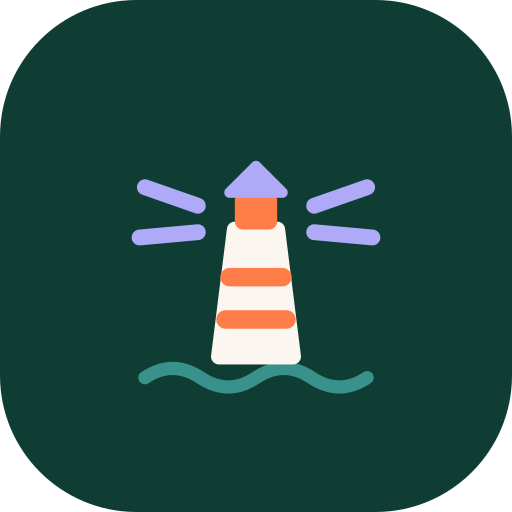
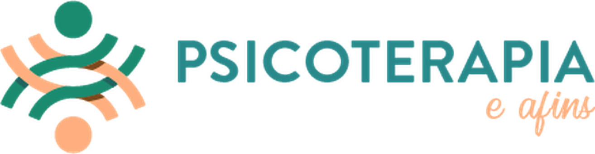
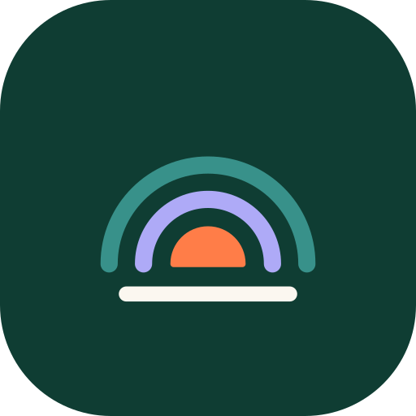
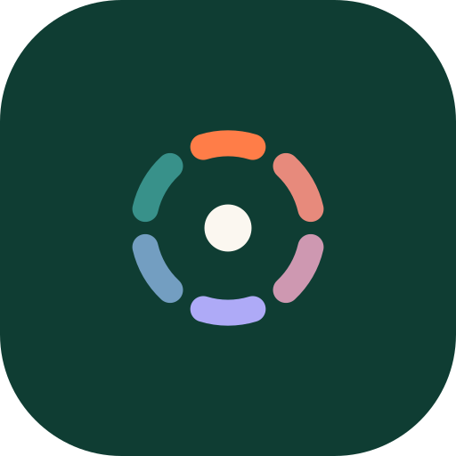
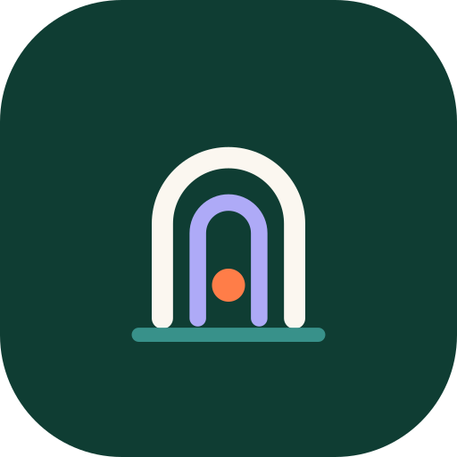
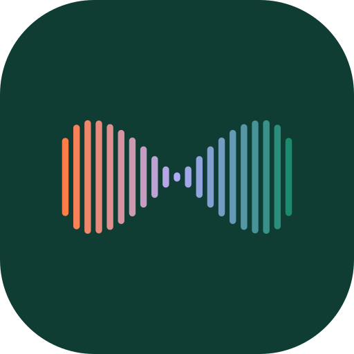
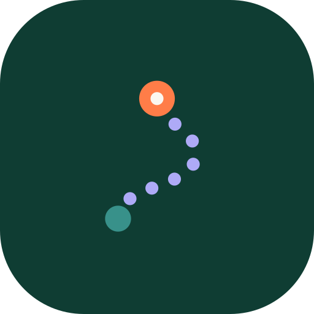

Farol
Para quem se preocupa demais
Oito módulos para entender como as preocupações funcionam e aprender a lidar com elas de outro jeito, com técnicas que têm base em pesquisa.
Conhecer o Farol
Programas para fazer no seu ritmo, no celular ou no computador. Você não precisa fazer tudo, nem fazer todo dia. Escolher um já é um bom começo.
Me ajude a escolherNão existe resposta certa. Se mudar de ideia amanhã, tudo bem: você pode trocar de programa quando quiser.Escolha pelo que está precisando. Dá para trocar quando quiser.

Para quem se preocupa demais
Oito módulos para entender como as preocupações funcionam e aprender a lidar com elas de outro jeito, com técnicas que têm base em pesquisa.
Conhecer o Farol
Cultivando emoções positivas
Oito módulos para notar, saborear e cultivar o que já é bom, e um laboratório para testar as crenças que nos impedem de aproveitar.
Conhecer o Floresça
Um passo de cada vez
Pequenas atividades que você escolhe e planeja, com registro de humor e diário, no seu ritmo.
Conhecer o Aurora
Cada sentimento tem seu tom
Para reconhecer e nomear as seis emoções básicas. Pensado também para quem sente dificuldade de nomear o que sente (alexitimia) ou é neurodivergente.
Conhecer o Matiz
Reconstruindo a sensação de segurança
Para quem viveu situações difíceis ou traumáticas. Um caminho, sem pressa, para regular o corpo, organizar o que aconteceu e reconstruir a confiança, e assim cultivar calma e conexão.
Conhecer o Segurança Interna
Escolher para onde levar a atenção
Treino de atenção com sons ambientes, guiado em três fases, para praticar entre sessões.
Conhecer o Sintonia
Apoio no seu ritmo
Para adultos neurodivergentes: tarefas em micro-passos, rotinas visuais e regulação sensorial, sem metas nem cobrança.
Conhecer o Ritmo
Apoio entre as sessões, para adolescentes em acompanhamento online. O acesso é por convite da psicóloga, para que cada pessoa chegue com o cuidado certo.Trilha, para adolescentes, é por convite da psicóloga.
Nada de sequência a manter ou ranking. Dias difíceis fazem parte do processo.
Telas curtas, um passo por vez, e sempre dá para pular, voltar ou pausar.
Use sem conta. Baixe ou apague quando quiser. Compartilhar com a profissional é escolha sua.
As escalas mostram números para você acompanhar o seu momento, não diagnósticos.
Se você estiver em sofrimento intenso ou em risco, fale com alguém agora. A ligação é gratuita, e pedir ajuda também é cuidado. Estes programas não substituem atendimento.